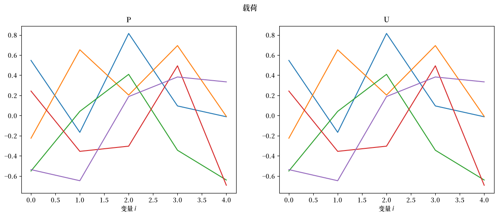
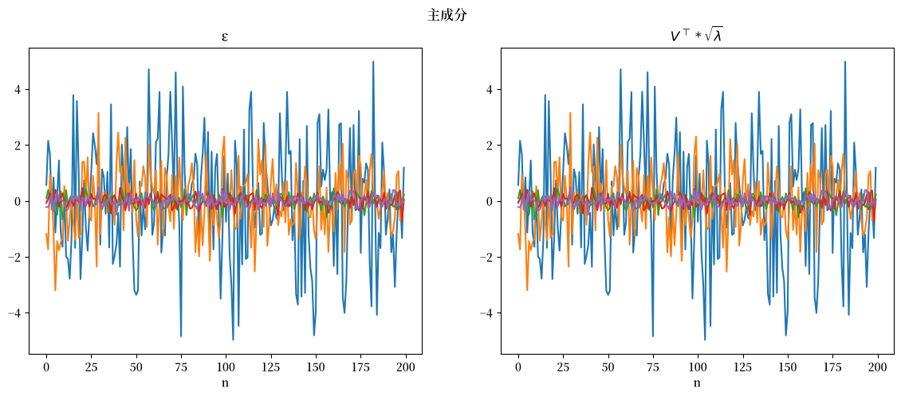
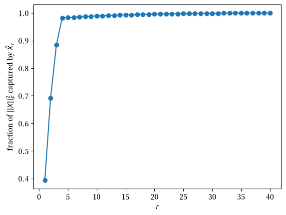

5. 奇异值分解#
5.1. 概述#
奇异值分解（SVD）是一个强大的数学工具，在数据分析和机器学习中有着广泛的应用。它不仅可以用于最小二乘投影，还是许多统计和机器学习方法的基石。
在这一讲中，我们将首先介绍SVD的基本概念，然后探讨它与以下几个重要领域的关系：
线性代数中的四个基本子空间
矩阵的低秩近似
最小二乘回归（包括欠定和超定情况，参见练习部分）
主成分分析（PCA）
在这一讲的后续内容 VAR 与 DMD 中，我们将介绍如何利用 SVD，借助动态模态分解（DMD）来快速计算一阶向量自回归（VAR）模型的低秩近似。
与主成分分析类似，动态模态分解（DMD）也可以被看作是一种数据降维方法，它通过将数据投影到一组有限的因子上来表示数据中的显著模式。
5.2. 基本设定#
假设我们有一个\(m \times n\)的矩阵\(X\)，其秩为\(p\)。
显然，\(p\)不会超过\(m\)和\(n\)的较小值，即\(p \leq \min(m,n)\)。
在实际应用中，\(X\)通常代表一个数据矩阵：
每一列代表一个观测单位（可以是某个时间点的数据，或是某个个体的信息）
每一行代表一个变量（用来描述观测单位的某个特征或属性）
我们将关注两种情况：
矮胖情况，即\(m \ll n\)，表示列数（个体）远多于行数（属性）。
高瘦情况，即\(m \gg n\)，表示行数（属性）远多于列数（个体）。
我们将在这两种情况下对\(X\)进行奇异值分解。
在 \(m \ll n\) 的情况下，即个体数量 \(n\) 远大于属性数量 \(m\) 时，我们可以通过对观测值函数取平均来计算联合分布的样本矩。
在这种 \(m \ll n\) 的情况下，我们将使用奇异值分解来进行主成分分析（PCA）以寻找模式。
在 \(m \gg n\) 的情况下，即属性数量 \(m\) 远大于个体数量 \(n\)，且在时间序列环境中 \(n\) 等于数据集 \(X\) 中所覆盖的时间段数量时，我们将采用不同的方法。
在后续的 VARs 和 DMDs 中，我们仍然使用奇异值分解，但目的是构建动态模态分解（DMD）。
5.3. 奇异值分解#
一个秩为 \(p \leq \min(m,n)\) 的 \(m \times n\) 矩阵 \(X\) 的奇异值分解为：
其中：
且
\(U\) 是 \(X\) 的 \(m \times m\) 正交矩阵，由左奇异向量组成
\(U\) 的列是 \(X X^\top \) 的特征向量
\(V\) 是 \(X\) 的 \(n \times n\) 正交矩阵，由右奇异向量组成
\(V\) 的列是 \(X^\top X\) 的特征向量
\(\Sigma\) 是一个 \(m \times n\) 矩阵，其主对角线上的前 \(p\) 个位置是正数 \(\sigma_1 \geq \sigma_2 \geq \cdots \geq \sigma_p\)，称为奇异值；\(\Sigma\) 的其余元素都为零
这 \(p\) 个奇异值是 \(m \times m\) 矩阵 \(X X^\top \) 以及 \(n \times n\) 矩阵 \(X^\top X\) 的非零特征值的正平方根
我们约定，当 \(U\) 是复值矩阵时，\(U^\top \) 表示 \(U\) 的共轭转置或厄米特转置，即 \(U_{ij}^\top \) 是 \(U_{ji}\) 的复共轭。
类似地，当 \(V\) 是复值矩阵时，\(V^\top\) 表示 \(V\) 的共轭转置或厄米特转置
矩阵 \(U,\Sigma,V\) 通过以下方式对向量进行线性变换：
用酉矩阵 \(U\) 和 \(V\) 乘以向量会使其旋转，但保持向量之间的角度和向量的长度不变。
用对角矩阵 \(\Sigma\) 乘以向量会按每个奇异值重新缩放各个坐标（当 \(m \neq n\) 时还会增加或舍弃坐标）；一般来说，这既会改变向量的长度，也会改变向量之间的角度。
因此，表示式 (5.1) 表明，用 \(m \times n\) 矩阵 \(X\) 乘以 \(n \times 1\) 向量 \(y\) 相当于按顺序执行以下三个乘法运算：
通过计算 \(V^\top y\) 来旋转 \(y\)
通过乘以 \(\Sigma\) 来重新缩放 \(V^\top y\)
通过乘以 \(U\) 来旋转 \(\Sigma V^\top y\)
\(m \times n\) 矩阵 \(X\) 的这种结构为构建系统开启了大门
数据编码器和解码器。
因此，
\(V^\top\) 是一个编码器
\(\Sigma\) 是一个应用于编码数据的运算符
\(U\) 是一个解码器，用于处理将运算符 \(\Sigma\) 应用于编码数据后的输出
我们将在后续的 VARs and DMDs 中研究动态模态分解时应用这些概念。
未来路线
我们上面描述的是所谓的完全 SVD。
在完全 SVD 中，\(U\)、\(\Sigma\) 和 \(V\) 的形状分别为 \(\left(m, m\right)\)、\(\left(m, n\right)\)、\(\left(n, n\right)\)。
稍后我们还将描述经济型或简化 SVD。
在研究简化 SVD之前，我们将进一步讨论完全 SVD的性质。
5.4. 四个基本子空间#
让 \({\mathcal C}\) 表示列空间，\({\mathcal N}\) 表示零空间，\({\mathcal R}\) 表示行空间。
让我们首先回顾一下秩为 \(p\) 的 \(m \times n\) 矩阵 \(X\) 的四个基本子空间。
列空间\(X\)，记作\({\mathcal C}(X)\)，是\(X\)的列向量的张成空间，即所有可以写成\(X\)的列向量的线性组合的向量\(y\)。其维数为\(p\)。
零空间\(X\)，记作\({\mathcal N}(X)\)，包含所有满足\(Xy=0\)的向量\(y\)。其维数为\(n-p\)。
行空间\(X\)，记作\({\mathcal R}(X)\)，是\(X^\top\)的列空间。它包含所有可以写成\(X\)的行向量的线性组合的向量\(z\)。其维数为\(p\)。
左零空间\(X\)，记作\({\mathcal N}(X^\top)\)，包含所有满足\(X^\top z=0\)的向量\(z\)。其维数为\(m-p\)。
对于矩阵\(X\)的完全奇异值分解，左奇异向量矩阵\(U\)和右奇异向量矩阵\(V\)包含了所有四个子空间的正交基。
它们形成两对正交子空间，我们现在来描述。
令\(u_i, i = 1, \ldots, m\)为\(U\)的\(m\)个列向量，令
设 \(v_i, i = 1, \ldots, n\) 为 \(V\) 的 \(n\) 个列向量。
让我们将 \(X\) 的完整奇异值分解写作
其中 \(\Sigma_p\) 是一个 \(p \times p\) 对角矩阵，对角线上是 \(p\) 个奇异值，且
表示式 (5.2) 意味着
或
或
方程 (5.4) 说明了变换 \(X\) 如何将一对正交单位向量 \(v_i, v_j\)（其中 \(i\) 和 \(j\) 都小于或等于 \(X\) 的秩 \(p\)）映射到一对长度分别为 \(\sigma_i\) 和 \(\sigma_j\) 的正交向量 \(\sigma_i u_i, \sigma_j u_j\)。
方程 (5.3) 表明
对表示式 (5.2) 两边取转置得到
或
或
注意方程 (5.6) 表明变换 \(X^\top\) 将一对不同的正交单位向量 \(u_i, u_j\)（其中 \(i\) 和 \(j\) 都小于或等于 \(X\) 的秩 \(p\)）映射到一对正交向量 \(\sigma_i v_i, \sigma_j v_j\)。
方程 (5.5) 表明：
因此，方程组 (5.3) 和 (5.5) 共同描述了 \(X\) 的四个基本子空间，如下所示：
由于 \(U\) 和 \(V\) 都是正交矩阵，集合 (5.7) 表明
\(U_L\) 是 \(X\) 列空间的标准正交基
\(U_R\) 是 \(X^\top\) 零空间的标准正交基
\(V_L\) 是 \(X\) 行空间的标准正交基
\(V_R\) 是 \(X\) 零空间的标准正交基
我们通过执行 (5.2) 右侧要求的乘法并读取结果，已经验证了 (5.7) 中的四个声明。
(5.7) 中的声明以及 \(U\) 和 \(V\) 都是酉矩阵（即正交矩阵）这一事实意味着：
\(X\) 的列空间与 \(X^\top\) 的零空间正交
\(X\) 的零空间与 \(X\) 的行空间正交
这些性质有时用以下两对正交补空间来描述：
\({\mathcal C}(X)\) 是 \({\mathcal N}(X^\top )\) 的正交补
\({\mathcal R}(X)\) 是 \({\mathcal N}(X)\) 的正交补
让我们看一个例子。
import numpy as np
import numpy.linalg as LA
import matplotlib.pyplot as plt
import matplotlib as mpl
FONTPATH = "fonts/SourceHanSerifSC-SemiBold.otf"
mpl.font_manager.fontManager.addfont(FONTPATH)
plt.rcParams['font.family'] = ['Source Han Serif SC']
rng = np.random.default_rng(1234)
导入这些模块后，让我们来看示例。
我们使用一个秩为 \(2\) 的 \(4 \times 5\) 矩阵，因此四个子空间的维数分别为 \(2\)、\(2\)、\(2\) 和 \(3\)。
注意 np.linalg.svd 返回的第三个输出是 \(V^\top\)，而不是 \(V\)。
因此行空间和零空间是由该输出的行所张成的。
np.set_printoptions(precision=2, suppress=True)
# 定义矩阵
A = np.array([[1, 2, 3, 4, 5],
[2, 3, 4, 5, 6],
[3, 4, 5, 6, 7],
[4, 5, 6, 7, 8]])
# 计算矩阵的奇异值分解；第三个输出是 V^T
U, S, VT = np.linalg.svd(A, full_matrices=True)
# 计算矩阵的秩
rank = np.linalg.matrix_rank(A)
print("矩阵的秩:\n", rank)
print("S: \n", S)
# 四个基本子空间的标准正交基
col_space = U[:, :rank] # C(A)，R^4 的子空间
left_null_space = U[:, rank:] # N(A^T)，R^4 的子空间
row_space = VT[:rank, :].T # R(A)，R^5 的子空间
null_space = VT[rank:, :].T # N(A)，R^5 的子空间
print("列空间:\n", col_space)
print("左零空间:\n", left_null_space)
print("行空间:\n", row_space)
print("零空间:\n", null_space)
矩阵的秩:
2
S:
[21.63 1.46 0. 0. ]
列空间:
[[ 0.34 0.76]
[ 0.44 0.33]
[ 0.54 -0.11]
[ 0.64 -0.54]]
左零空间:
[[-0.55 0.02]
[ 0.75 0.38]
[ 0.15 -0.82]
[-0.35 0.42]]
行空间:
[[ 0.25 -0.73]
[ 0.34 -0.43]
[ 0.43 -0.13]
[ 0.52 0.18]
[ 0.61 0.48]]
零空间:
[[-0.5 -0.03 -0.39]
[ 0.75 0.37 0.04]
[-0.25 -0.14 0.85]
[ 0.26 -0.75 -0.28]
[-0.25 0.53 -0.22]]
让我们验证这些基是否具有 (5.7) 所断言的性质。
print("A @ null_space = 0: ", np.allclose(A @ null_space, 0))
print("A.T @ left_null_space = 0: ", np.allclose(A.T @ left_null_space, 0))
print("col_space ⟂ left_null_space:", np.allclose(col_space.T @ left_null_space, 0))
print("row_space ⟂ null_space: ", np.allclose(row_space.T @ null_space, 0))
A @ null_space = 0: True
A.T @ left_null_space = 0: True
col_space ⟂ left_null_space: True
row_space ⟂ null_space: True
5.5. Eckart-Young定理#
假设我们要构造一个\(m \times n\)矩阵\(X\)的最佳秩\(r\)近似。
这里的最佳，指的是在所有维度为\(m \times n\)的秩为\(r < p\)的矩阵中，找到一个矩阵\(X_r\)使得以下范数最小：
其中\(|| \cdot ||\)表示矩阵的范数。
一个\(m \times n\)矩阵\(X\)的三种常用矩阵范数可以用\(X\)的奇异值表示：
谱范数或\(l^2\)范数 \(|| X ||_2 = \max_{||y|| \neq 0} \frac{||X y ||}{||y||} = \sigma_1\)
Frobenius范数 \(||X ||_F = \sqrt{\sigma_1^2 + \cdots + \sigma_p^2}\)
核范数 \( || X ||_N = \sigma_1 + \cdots + \sigma_p \)
Eckart-Young定理指出，对于这三种范数，最佳的秩\(r\)矩阵是相同的，等于：
其中\(U_r\)和\(V_r\)分别由\(U\)和\(V\)的前\(r\)列组成，\(\Sigma_r\)是由\(r\)个最大奇异值构成的\(r \times r\)对角矩阵。
由此产生的近似误差为
这是一个非常强大的定理。
它表明，我们可以用由\(X\)的\(r\)个最大奇异值及其奇异向量构造的秩\(r < p\)的\(m \times n\)矩阵，来近似一个秩为\(p\)的\(m \times n\)矩阵\(X\)，而我们所舍弃的奇异值则衡量了近似误差的大小。
如果少数几个奇异值远大于其他奇异值，那么低秩近似就能捕捉到\(X\)的大部分信息，同时我们只需存储\(r(m + n + 1)\)个数字，而不是\(mn\)个。
你可以在 这里 阅读关于Eckart-Young定理及其应用的内容。
在下面讨论主成分分析（PCA）时，我们将会用到这个定理。
它同样构成了后续内容 VAR与DMD 的基础，其中近似矩阵\(\hat X_r\)的伪逆
是动态模态分解的一个关键组成部分。
5.6. 完全SVD和简化SVD#
到目前为止，我们描述的是完全SVD的性质，其中 \(U\)、\(\Sigma\) 和 \(V\) 的形状分别为 \(\left(m, m\right)\)、\(\left(m, n\right)\)、\(\left(n, n\right)\)。
有一种替代性的矩阵分解记法，称为经济型或简化型 SVD，其中 \(U, \Sigma\) 和 \(V\) 的形状与完全SVD中的不同。
因为我们假设 \(X\) 的秩为 \(p\)，所以只有 \(p\) 个非零奇异值，其中 \(p=\textrm{rank}(X)\leq\min\left(m, n\right)\)。
简化型 SVD利用这一事实，将 \(U\)、\(\Sigma\) 和 \(V\) 表示为形状分别为 \(\left(m, p\right)\)、\(\left(p, p\right)\)、\(\left(n, p\right)\) 的矩阵。
你可以在这里了解简化型和完全型SVD https://numpy.org/doc/stable/reference/generated/numpy.linalg.svd.html
（使用选项 full_matrices=False 时，numpy 会返回 \(U\) 和 \(V\) 的 \(\min(m, n)\) 列；当 \(p < \min(m,n)\) 时，我们会去掉对应于零奇异值的列，从而得到这里所指的简化型SVD。）
对于完全型SVD，
但这些性质并非都适用于简化型 SVD。
对于简化型SVD，\(U^\top U = I_{p \times p}\) 和 \(V^\top V = I_{p \times p}\) 总是成立，但只有当 \(p = m\) 时 \(U U^\top = I_{m \times m}\) 才成立，只有当 \(p = n\) 时 \(V V^\top = I_{n \times n}\) 才成立。
因此，哪些性质成立取决于我们处理的是高瘦型矩阵还是矮胖型矩阵。
在高瘦型情况下，即 \(m \gg n\) 且 \(X\) 具有满列秩 \(p = n\)，对于简化型 SVD
在矮胖型情况下，即 \(m \ll n\) 且 \(X\) 具有满行秩 \(p = m\)，对于简化型 SVD
当我们在后续 VARs and DMDs 中研究动态模态分解时，我们需要记住这些性质，因为在高瘦型情况下我们会使用简化SVD。
让我们做一个例子来比较完全和简化SVD。
回顾一下，
在完全SVD中
\(U\) 是 \(m \times m\) 维
\(\Sigma\) 是 \(m \times n\) 维
\(V\) 是 \(n \times n\) 维
在简化SVD中
\(U\) 是 \(m \times p\) 维
\(\Sigma\) 是 \(p \times p\) 维
\(V\) 是 \(n \times p\) 维
首先，让我们研究一个 \(m = 5 > n = 2\) 的情况。
（这是我们在后续研究动态模态分解时会遇到的高瘦情况的一个小例子。）
X = rng.random((5, 2))
U, S, V = np.linalg.svd(X, full_matrices=True) # 完整SVD
Uhat, Shat, Vhat = np.linalg.svd(X, full_matrices=False) # 简化SVD
print('U, S, V =')
U, S, V
U, S, V =
(array([[-0.58, 0.17, -0.2 , -0.67, -0.38],
[-0.53, -0.23, -0.05, 0.68, -0.45],
[-0.19, 0.03, 0.98, -0.09, -0.04],
[-0.18, 0.92, -0.03, 0.29, 0.19],
[-0.55, -0.27, -0.07, -0.01, 0.78]]),
array([1.8 , 0.24]),
array([[-0.95, -0.33],
[-0.33, 0.95]]))
print('Uhat, Shat, Vhat = ')
Uhat, Shat, Vhat
Uhat, Shat, Vhat =
(array([[-0.58, 0.17],
[-0.53, -0.23],
[-0.19, 0.03],
[-0.18, 0.92],
[-0.55, -0.27]]),
array([1.8 , 0.24]),
array([[-0.95, -0.33],
[-0.33, 0.95]]))
rr = np.linalg.matrix_rank(X)
print(f'X的秩 = {rr}')
X的秩 = 2
性质：
当\(U\)通过完全SVD构造时，\(U^\top U = I_{m\times m}\) 且 \(U U^\top = I_{m \times m}\)
当\(\hat U\)通过简化SVD构造时，虽然\(\hat U^\top \hat U = I_{p\times p}\)，但\(\hat U \hat U^\top \neq I_{m \times m}\)
我们通过以下代码单元来说明这些性质。
UTU = U.T@U
UUT = U@U.T
print('UUT, UTU = ')
UUT, UTU
UUT, UTU =
(array([[ 1., 0., -0., -0., -0.],
[ 0., 1., -0., 0., -0.],
[-0., -0., 1., -0., -0.],
[-0., 0., -0., 1., 0.],
[-0., -0., -0., 0., 1.]]),
array([[ 1., 0., 0., 0., -0.],
[ 0., 1., 0., 0., -0.],
[ 0., 0., 1., 0., -0.],
[ 0., 0., 0., 1., 0.],
[-0., -0., -0., 0., 1.]]))
UhatUhatT = Uhat@Uhat.T
UhatTUhat = Uhat.T@Uhat
print('UhatUhatT, UhatTUhat= ')
UhatUhatT, UhatTUhat
UhatUhatT, UhatTUhat=
(array([[ 0.37, 0.27, 0.12, 0.26, 0.28],
[ 0.27, 0.33, 0.09, -0.11, 0.36],
[ 0.12, 0.09, 0.04, 0.06, 0.1 ],
[ 0.26, -0.11, 0.06, 0.88, -0.15],
[ 0.28, 0.36, 0.1 , -0.15, 0.38]]),
array([[1., 0.],
[0., 1.]]))
注释：
上述代码展示了 full_matrices=True 和 full_matrices=False 选项的应用。
使用 full_matrices=False 会返回简化的奇异值分解。
完整和简化的奇异值分解都能准确地分解一个 \(m \times n\) 矩阵 \(X\)。
当我们在后续研究动态模态分解时，记住在这种高瘦矩阵情况下完整和简化奇异值分解的上述性质将很重要。
现在让我们来看一个矮胖矩阵的情况。
为了说明这种情况，我们将设置 \(m = 2 < 5 = n\)，并计算完整和简化的奇异值分解。
X = rng.random((2, 5))
U, S, V = np.linalg.svd(X, full_matrices=True) # 完整SVD
Uhat, Shat, Vhat = np.linalg.svd(X, full_matrices=False) # 简化SVD
print('U, S, V = ')
U, S, V
U, S, V =
(array([[ 0.78, -0.63],
[ 0.63, 0.78]]),
array([1.97, 0.68]),
array([[ 0.39, 0.48, 0.41, 0.4 , 0.55],
[ 0.35, 0.28, -0.55, -0.61, 0.37],
[-0.52, 0.45, 0.49, -0.54, -0. ],
[-0.52, 0.51, -0.54, 0.43, 0.02],
[-0.44, -0.49, -0.02, -0. , 0.75]]))
print('Uhat, Shat, Vhat = ')
Uhat, Shat, Vhat
Uhat, Shat, Vhat =
(array([[ 0.78, -0.63],
[ 0.63, 0.78]]),
array([1.97, 0.68]),
array([[ 0.39, 0.48, 0.41, 0.4 , 0.55],
[ 0.35, 0.28, -0.55, -0.61, 0.37]]))
让我们验证我们的简化SVD是否准确表示\(X\)
SShat=np.diag(Shat)
np.allclose(X, Uhat@SShat@Vhat)
True
5.7. 极分解#
矩阵 \(X\) 的简化奇异值分解与其极分解相关
其中
在我们的简化SVD中
\(U\) 是一个 \(m \times p\) 正交矩阵
\(\Sigma\) 是一个 \(p \times p\) 对角矩阵
\(V\) 是一个 \(n \times p\) 正交矩阵
由于 \(U^\top U = I\)，我们有 \(SQ = U \Sigma U^\top U V^\top = U \Sigma V^\top = X\)。
这里
\(S\) 是一个 \(m \times m\) 对称半正定矩阵
\(Q\) 是一个 \(m \times n\) 矩阵，满足 \(Q Q^\top = U U^\top\)；因此当 \(p = m\) 时，例如当 \(X\) 是具有满行秩的矮胖矩阵时，\(Q Q^\top = I\)，此时 \(Q\) 具有正交的行
5.8. 应用：主成分分析(PCA)#
让我们从 \(n \gg m\) 的情况开始，即个体数量 \(n\) 远大于属性数量 \(m\) 的情况。
在 \(n \gg m\) 的情况下，矩阵 \(X\) 是矮胖型的，这与后文要讨论的 \(m \gg n\) 情况下的高瘦型相对。
我们将 \(X\) 视为一个 \(m \times n\) 的数据矩阵：
其中对于 \(j = 1, \ldots, n\)，列向量 \(X_j = \begin{bmatrix}x_{1j}\\x_{2j}\\\vdots\\x_{mj}\end{bmatrix}\) 是变量 \(1, 2, \ldots, m\) 的观测值向量。
在时间序列分析中，列索引 \(j\) 代表不同的时间点，而行索引代表不同的随机变量。
在横截面分析中，列索引 \(j\) 代表不同的个体，而行索引代表它们的不同属性。
正如我们之前所见，SVD 是一种将矩阵分解为有用组件的方法，就像极分解、特征分解等其他方法一样。
而 PCA 则是一种基于 SVD 进行数据分析的方法。
其目标是找到变量的若干线性组合，以捕捉数据中最重要的变化模式。
第1步：数据中心化：
由于我们关注的是数据围绕其均值的变化，因此我们首先减去样本均值。
（由于数据矩阵可能包含不同单位和尺度的变量，我们也可以通过将每一行除以其样本标准差来对数据进行标准化。）
我们首先计算 \(X\) 的每一行的平均值
然后用这些平均值创建一个矩阵：
然后从原始矩阵中减去它，得到一个均值中心化矩阵：
第2步：计算协方差矩阵：
由于我们希望提取变量之间的关系，而不仅仅是它们的大小——换句话说，我们想知道它们能在多大程度上相互解释——因此我们计算 \(B\) 的样本协方差矩阵。
第3步：分解协方差矩阵并排列奇异值：
由于矩阵 \(C\) 是对称且半正定的，我们可以对其进行特征分解，找出其特征值，并将特征值和特征向量矩阵按降序排列。
\(C\) 的特征分解可以通过分解 \(B\) 来求得。由于 \(B\) 不是方阵，我们对 \(B\) 进行 SVD 分解：
因此
按照惯例，奇异值按降序排列，这也是 numpy 的做法。
第4步：选择奇异值，（可选）截断其余部分：
我们现在可以根据想要保留的方差量来决定保留多少个奇异值（例如，保留95%的总方差）。
我们可以通过计算前 \(r\) 个主要因子所包含的方差除以总方差来获得这个百分比：
根据埃克特-杨定理（Eckart-Young theorem），\(1\) 减去这个比率，也等于 \(B\) 的最佳秩 \(r\) 近似 \(\hat B_r\) 的平方相对弗罗贝尼乌斯范数误差 \(||B - \hat B_r||_F^2 / ||B||_F^2\)。
第5步：创建得分矩阵：
主成分（或得分）矩阵为
它的第 \(k\) 行是第 \(k\) 个主成分在各观测值 \(j = 1, \ldots, n\) 上构成的序列。
只保留前 \(r\) 行，就得到了前 \(r\) 个主成分构成的 \(r \times n\) 矩阵 \(T_r = U_r^\top B\)，而 \(U_r T_r = U_r \Sigma_r V_r^\top = \hat B_r\) 就是 \(B\) 的埃克特-杨近似。
在后文 VAR 与 DMD 中，时刻 \(t\) 横截面的前 \(r\) 个主成分所构成的向量 \(U_r^\top X_t\)，将作为主成分回归中的回归变量，用于预测下一期的横截面数据。
5.9. PCA与SVD的关系#
为了将SVD与数据集\(X\)的PCA联系起来，首先构造数据矩阵\(X\)的SVD。
让我们假设所有变量的样本均值都为零，这样我们就不需要对矩阵进行中心化了。
其中
在方程(5.9)中，每个\(m \times n\)矩阵\(U_{j}V_{j}^\top \)显然是秩1的。
因此，我们有
在时间序列分析的背景下，我们可以这样解释方程 (5.10) 中的对象：
对于每个\(k=1, \ldots, p\)，对象 \(\lbrace V_{jk} \rbrace_{j=1}^n\)（即\(V\)的第\(k\)列）是第\(k\)个主成分的时间序列，经过归一化使其具有单位长度；未归一化的主成分为\(\sigma_k V_k^\top = U_k^\top X\)
\(U_k = \begin{bmatrix}U_{1k}\\U_{2k}\\\vdots\\U_{mk}\end{bmatrix}, \ k=1, \ldots, p\)， 是变量\(X_i\)在第\(k\)个主成分上的载荷向量，其中\(i=1, \ldots, m\)
对于每个\(k=1, \ldots, p\)，\(\sigma_k\)是第\(k\)个主成分的强度，这里的强度指的是对\(X\)的整体协方差的贡献：第\(k\)个主成分对这\(m\)个变量样本方差之和的贡献为\(\sigma_k^2 / n\)
5.10. 基于特征值和特征向量的PCA#
现在我们使用样本协方差矩阵的特征分解来进行PCA。
设\(X_{m \times n}\)为我们的\(m \times n\)数据矩阵。
假设所有变量的样本均值都为零。
我们可以通过减去样本均值的预处理来确保这一点。
定义一个与样本协方差矩阵成比例（等于其\(n\)倍）的矩阵\(\Omega\)为
然后使用特征分解将\(\Omega\)表示为：
这里
\(P\)是\(\Omega\)的\(m×m\)正交特征向量矩阵
\(\Lambda\)是\(\Omega\)的特征值对角矩阵
我们可以将 \(X\) 表示为：
其中
且
我们可以验证
因此数据矩阵\(X\)可以写成:
其中\(P_j\)是\(P\)的第\(j\)列，\(\epsilon_j\)是\(\epsilon\)的第\(j\)行，为\(1 \times n\)向量。
为了将前面的表示与我们之前通过SVD获得的PCA相协调，我们首先注意到\(\epsilon_j \epsilon_j^\top = \lambda_j \equiv \sigma^2_j\)。
现在对每个满足\(\lambda_j > 0\)的\(j\)定义\(\tilde{\epsilon}_j = \frac{\epsilon_j}{\sqrt{\lambda_j}}\)， 这意味着\(\tilde{\epsilon}_j\tilde{\epsilon}_j^\top =1\)。
当\(\lambda_j = 0\)时相应的项会消失，因为此时\(\epsilon_j = 0\)。
因此
这与SVD分解
是等价的，只要我们令:
\(U_j=P_j\) (变量在第j个主成分上的载荷向量)
\({V_k}^{\top}=\tilde{\epsilon}_k\) (第k个主成分)
由于对于给定的数据矩阵\(X\)，计算\(P\)和\(U\)有不同的算法，根据所使用的算法，我们可能会得到符号差异或特征向量顺序的不同。
我们可以通过以下方式解决关于\(U\)和\(P\)的这些歧义：
将特征值和奇异值按降序排列
在\(P\)和\(U\)中强制使对角线为正，并相应地调整\(V^\top\)中的符号
5.11. 联系#
为了把这些内容整合起来，有必要把上面给出的一些公式汇总并加以比较。
首先，考虑一个\(m \times n\)矩阵的SVD：
计算：
将表示式 (5.12) 与上面的方程 (5.11) 进行比较。
显然，SVD中的\(U\)就是\(XX^\top\)的特征向量矩阵\(P\)，而\(\Sigma \Sigma^\top\)就是特征值矩阵\(\Lambda\)。
其次，让我们计算
因此，SVD中的矩阵\(V\)是\(X^\top X\)的特征向量矩阵。
总结并整合这些内容，我们得到样本协方差矩阵的特征分解
其中\(P\)是一个正交矩阵。
此外，从\(X\)的SVD分解中，我们知道
其中\(U\)是一个正交矩阵。
因此，\(P = U\)（在列的排序和符号上可能有所不同），我们得到\(X\)的表示
由此可得
因此\(\epsilon\)就是我们在上面第5步中构造的主成分（得分）矩阵。
注意，上述结果意味着
因此所有内容都能够互相吻合。
下面我们定义一个DecomAnalysis类，用于对给定的数据矩阵X进行PCA和SVD分析。
class DecomAnalysis:
"""
用于进行PCA和SVD分析的类。
X: 数据矩阵
r_component: 最佳近似所选择的秩
"""
def __init__(self, X, r_component=None):
self.X = X
self.Ω = (X @ X.T)
self.m, self.n = X.shape
self.r = LA.matrix_rank(X)
if r_component:
self.r_component = r_component
else:
self.r_component = min(self.m, self.n)
def pca(self):
𝜆, P = LA.eigh(self.Ω) # P的列是特征向量
ind = sorted(range(𝜆.size), key=lambda x: 𝜆[x], reverse=True)
# 按特征值排序
self.𝜆 = 𝜆[ind]
P = P[:, ind]
self.P = P @ diag_sign(P)
self.Λ = np.diag(self.𝜆)
self.explained_ratio_pca = np.cumsum(self.𝜆) / self.𝜆.sum()
# 计算m乘n的主成分矩阵
self.𝜖 = self.P.T @ self.X
P = self.P[:, :self.r_component]
𝜖 = self.𝜖[:self.r_component, :]
# 转换数据
self.X_pca = P @ 𝜖
def svd(self):
U, 𝜎, VT = LA.svd(self.X)
ind = sorted(range(𝜎.size), key=lambda x: 𝜎[x], reverse=True)
# 按特征值排序
d = min(self.m, self.n)
self.𝜎 = 𝜎[ind]
U = U[:, ind]
D = diag_sign(U)
self.U = U @ D
VT[:d, :] = D @ VT[ind, :]
self.VT = VT
self.Σ = np.zeros((self.m, self.n))
self.Σ[:d, :d] = np.diag(self.𝜎)
𝜎_sq = self.𝜎 ** 2
self.explained_ratio_svd = np.cumsum(𝜎_sq) / 𝜎_sq.sum()
# 按使用的成分数量切分矩阵
U = self.U[:, :self.r_component]
Σ = self.Σ[:self.r_component, :self.r_component]
VT = self.VT[:self.r_component, :]
# 转换数据
self.X_svd = U @ Σ @ VT
def fit(self, r_component):
# pca
P = self.P[:, :r_component]
𝜖 = self.𝜖[:r_component, :]
# 转换数据
self.X_pca = P @ 𝜖
# svd
U = self.U[:, :r_component]
Σ = self.Σ[:r_component, :r_component]
VT = self.VT[:r_component, :]
# 转换数据
self.X_svd = U @ Σ @ VT
def diag_sign(A):
"计算矩阵A对角线元素的符号"
D = np.diag(np.sign(np.diag(A)))
return D
我们还定义一个函数来打印信息，以便比较不同算法得到的分解结果。
def compare_pca_svd(da):
"""
比较PCA和SVD的结果。
"""
da.pca()
da.svd()
print('特征值和奇异值\n')
print(f'λ = {da.λ}\n')
print(f'σ^2 = {da.σ**2}\n')
print('\n')
k = da.r
# 载荷矩阵
fig, axs = plt.subplots(1, 2, figsize=(14, 5))
plt.suptitle('载荷')
axs[0].plot(da.P[:, :k])
axs[0].set_title('P')
axs[0].set_xlabel('变量 $i$')
axs[1].plot(da.U[:, :k])
axs[1].set_title('U')
axs[1].set_xlabel('变量 $i$')
plt.show()
# 主成分
fig, axs = plt.subplots(1, 2, figsize=(14, 5))
plt.suptitle('主成分')
axs[0].plot(da.ε[:k, :].T)
axs[0].set_title('ε')
axs[0].set_xlabel('n')
axs[1].plot(da.VT[:k, :].T * np.sqrt(da.λ[:k]))
axs[1].set_title(r'$V^\top *\sqrt{\lambda}$')
axs[1].set_xlabel('n')
plt.show()
让我们把这些工具应用到一个由两个因子加噪声生成的、具有\(m = 5\)个变量和\(n = 200\)个观测值的“矮胖”数据矩阵上。
m, n = 5, 200
G = rng.normal(size=(m, 2)) # 两个因子上的载荷
Z = rng.normal(size=(2, n)) # 因子
X = G @ Z + 0.2 * rng.normal(size=(m, n))
X = X - X.mean(axis=1, keepdims=True) # 减去样本均值
da = DecomAnalysis(X)
compare_pca_svd(da)
特征值和奇异值
λ = [884.59 233.75 9.36 8.13 6.41]
σ^2 = [884.59 233.75 9.36 8.13 6.41]
findfont: Failed to find font weight normal, now using 600.
findfont: Failed to find font weight normal, now using 600.
findfont: Failed to find font weight normal, now using 600.
findfont: Failed to find font weight normal, now using 600.


这两种算法得到了相同的载荷和相同的主成分。
累积方差解释比例显示，两个主成分几乎解释了\(X\)中的全部变动，这与我们生成数据的方式是一致的。
print("explained ratio (PCA):", da.explained_ratio_pca)
print("explained ratio (SVD):", da.explained_ratio_svd)
explained ratio (PCA): [0.77 0.98 0.99 0.99 1. ]
explained ratio (SVD): [0.77 0.98 0.99 0.99 1. ]
关于将PCA应用于智力测验结构分析的例子，请参阅 多元正态分布 讲座。
请看该讲座中描述并演示经典因子分析模型的部分。
如前所述，在本讲座的续篇 VAR与DMD 中，我们将描述SVD如何提供快速计算一阶向量自回归（VARs）降阶近似的方法。
5.12. 练习#
练习 5.1
在普通最小二乘法（OLS）中，我们学会计算 \( \hat{\beta} = (X^\top X)^{-1} X^\top y \)，其中回归量矩阵 \(X\) 每一行对应一个观测值，每一列对应一个回归量。
但当回归量完全共线，或者当回归量数量多于观测值数量，使得 \(X\) 是矮胖矩阵且方程组 \(X \beta = y\) 是欠定的时候，矩阵 \(X^\top X\) 不可逆（其行列式为零）。
而当回归量近似共线时，\(X^\top X\) 是病态的，这意味着其最大特征值与最小特征值之比非常大。
在这些情况下，我们可以改用所谓的 伪逆 \(X^+\)，用它代替 \((X^\top X)^{-1} X^\top\)。
使用 \(X\) 的SVD构建伪逆矩阵 \(X^{+}\)，并用它来计算 \(\hat{\beta} = X^+ y\)。
证明当 \(X\) 的列线性无关时（即超定系统），\(X^+ = (X^\top X)^{-1} X^\top\)，因此 \(\hat \beta\) 就是通常的OLS估计量。
证明当 \(X\) 的行线性无关时（即欠定系统），\(\hat \beta\) 恰好求解 \(X \beta = y\)，并且在所有解中范数最小。
对一个 \(5 \times 8\) 的随机数矩阵 \(X\)，用数值方法验证上述结论。
解答 练习 5.1
我们可以使用SVD来计算伪逆。
从简约SVD出发
其中 \(\Sigma\) 是由正奇异值组成的 \(p \times p\) 对角矩阵，伪逆为
等价地，用完整SVD表示，\(X^+ = V \Sigma^+ U^\top\)，其中 \(n \times m\) 矩阵 \(\Sigma^+\) 是通过转置 \(\Sigma\) 并将每个正奇异值 \(\sigma_j\) 替换为 \(1/\sigma_j\) 得到的：
最后：
当 \(X\) 的列线性无关时，\(V\) 是一个方阵正交矩阵，所以
当 \(X\) 的行线性无关时，\(U\) 是一个方阵正交矩阵，所以
\(X \beta = y\) 的其他任意解都具有形式 \(\beta = \hat \beta + \eta\)，其中 \(X \eta = 0\)。
向量 \(\hat \beta = V (\Sigma^{-1} U^\top y)\) 位于 \(X\) 的行空间中，该行空间由 \(V\) 的列张成，而 \(\eta\) 位于 \(X\) 的零空间中。
这两个子空间是正交的，所以 \(\|\beta\|^2 = \|\hat \beta\|^2 + \|\eta\|^2 \geq \|\hat \beta\|^2\)。
下面给出数值验证。
n_obs, k = 5, 8
X = rng.normal(size=(n_obs, k))
y = rng.normal(size=n_obs)
U, σ, VT = np.linalg.svd(X, full_matrices=False)
X_plus = VT.T @ np.diag(1 / σ) @ U.T
β_hat = X_plus @ y
print("X_plus equals np.linalg.pinv(X):", np.allclose(X_plus, np.linalg.pinv(X)))
print("X β_hat = y: ", np.allclose(X @ β_hat, y))
# another exact solution: add an element of the null space of X
β_other = β_hat + (np.eye(k) - X_plus @ X) @ rng.normal(size=k)
print("X β_other = y: ", np.allclose(X @ β_other, y))
print(f"norms: |β_hat| = {LA.norm(β_hat):.3f}, |β_other| = {LA.norm(β_other):.3f}")
# over-determined case: pseudo-inverse reproduces OLS
X_tall = rng.normal(size=(8, 5))
print("pinv equals (X^T X)^{-1} X^T: ",
np.allclose(np.linalg.pinv(X_tall), LA.inv(X_tall.T @ X_tall) @ X_tall.T))
X_plus equals np.linalg.pinv(X): True
X β_hat = y: True
X β_other = y: True
norms: |β_hat| = 1.099, |β_other| = 1.175
pinv equals (X^T X)^{-1} X^T: True
练习 5.2
本练习通过数值方法验证Eckart-Young定理。
构造一个 \(60 \times 40\) 的矩阵 \(X\)，使其等于一个秩为 \(4\) 的矩阵加上噪声，例如
X = rng.normal(size=(60, 4)) @ rng.normal(size=(4, 40)) + 0.3 * rng.normal(size=(60, 40))
对于 \(r = 1, 2, 4, 8\)
计算Eckart-Young近似 \(\hat X_r\)，并验证 \(|| X - \hat X_r ||\) 在谱范数、弗罗贝尼乌斯范数和核范数下的公式
对于 \(500\) 个具有 \(r\) 个标准正交列、张成随机抽取子空间的矩阵 \(Q\)，将 \(|| X - \hat X_r ||_F\) 与 \(|| X - Q Q^\top X ||_F\) 进行比较（对每个 \(Q\)，\(Q Q^\top X\) 是列空间位于 \(Q\) 列空间中的 \(X\) 的最佳近似）
最后，绘制比值 \(\sum_{i \leq r} \sigma_i^2 / \sum_i \sigma_i^2\) 随 \(r\) 变化的图形，并将其与上文PCA流程中的第4步联系起来。
解答 练习 5.2
以下是一种解法。
m, n = 60, 40
X = rng.normal(size=(m, 4)) @ rng.normal(size=(4, n)) + 0.3 * rng.normal(size=(m, n))
U, σ, VT = np.linalg.svd(X, full_matrices=False)
print(" r spectral Frobenius nuclear |X - X_r|_F best random |X - QQ'X|_F")
for r in (1, 2, 4, 8):
X_r = U[:, :r] @ np.diag(σ[:r]) @ VT[:r, :]
E = X - X_r
checks = (np.isclose(LA.norm(E, 2), σ[r]),
np.isclose(LA.norm(E, 'fro'), np.sqrt(np.sum(σ[r:]**2))),
np.isclose(LA.norm(E, 'nuc'), np.sum(σ[r:])))
best_random = np.inf
for _ in range(500):
Q = LA.qr(rng.normal(size=(m, r)))[0]
best_random = min(best_random, LA.norm(X - Q @ Q.T @ X, 'fro'))
print(f"{r:2d} {str(checks[0]):8s} {str(checks[1]):9s} {str(checks[2]):8s}"
f" {LA.norm(E, 'fro'):10.2f} {best_random:10.2f}")
r spectral Frobenius nuclear |X - X_r|_F best random |X - QQ'X|_F
1 True True True 77.46 96.00
2 True True True 55.16 94.62
4 True True True 13.41 91.33
8 True True True 11.27 84.75
所有这三个误差公式都成立，而且没有任何一个随机抽取的秩-\(r\)近似能接近Eckart-Young近似的效果。
share = np.cumsum(σ**2) / np.sum(σ**2)
fig, ax = plt.subplots()
ax.plot(np.arange(1, len(σ) + 1), share, 'o-')
ax.set_xlabel('$r$')
ax.set_ylabel('fraction of $||X||_F^2$ captured by $\\hat X_r$')
plt.show()

这个比值在 \(r = 4\)（即 \(X\) 中信号部分的秩）之前急剧上升，之后趋于平缓。
这个比值正是PCA流程第4步用来决定保留多少主成分的“保留方差比例”，而 \(1\) 减去它就是 \(\hat X_r\) 的相对弗罗贝尼乌斯误差的平方。
练习 5.3
本练习为后续讲座 VAR与DMD 搭建桥梁。
模拟一个瘦高型时间序列数据集 \(\tilde X\)，包含 \(m = 100\) 个变量和 \(61\) 个时期，其中
其中 \(G\) 是一个 \(100 \times 2\) 的标准正态随机数矩阵，\(v_t\) 和 \(w_{t+1}\) 是标准正态随机向量。
减去每个变量的样本均值，然后使用前 \(41\) 个时期构造 \(X = \begin{bmatrix} \tilde X_1 \mid \cdots \mid \tilde X_{40} \end{bmatrix}\) 和 \(X' = \begin{bmatrix} \tilde X_2 \mid \cdots \mid \tilde X_{41} \end{bmatrix}\)。
计算一阶VAR \(\tilde X_{t+1} = A \tilde X_t + \epsilon_{t+1}\) 中矩阵 \(A\) 的最小二乘估计量 \(\hat A = X' X^+\)，并验证它能完美拟合：\(\hat A X = X'\)。
设 \(\hat X_2\) 为 \(X\) 的Eckart-Young秩-\(2\)近似。用数值方法验证 \(\hat X_2^+ = V_2 \Sigma_2^{-1} U_2^\top\)，并计算秩-\(2\)估计量 \(\hat A_2 = X' \hat X_2^+\)。
设 \(F = U_2^\top X\) 为 \(X\) 的前两个主成分组成的 \(2 \times 40\) 矩阵。验证 \(\hat A_2 = X' F^\top (F F^\top)^{-1} U_2^\top\)，即 \(\hat A_2 \tilde X_t\) 等于将 \(\tilde X_{t+1}\) 对 \(\tilde X_t\) 的前两个主成分回归所得的拟合值。
使用剩余的 \(20\) 个时期，比较 \(\check A = \hat A\) 和 \(\check A = \hat A_2\) 的一步样本外预测误差 \(\|X'_{\rm out} - \check A X_{\rm out}\|_F / \|X'_{\rm out}\|_F\)。对几个不同的随机种子重复此过程。
解答 练习 5.3
以下是一种解法。
def simulate_tall(m=100, T=61, σ_v=0.5, seed=1):
rng = np.random.default_rng(seed)
G = rng.normal(size=(m, 2))
a = np.array([0.9, 0.6])
z = np.zeros((2, T))
for t in range(T - 1):
z[:, t+1] = a * z[:, t] + rng.normal(size=2)
X_tilde = G @ z + σ_v * rng.normal(size=(m, T))
return X_tilde - X_tilde.mean(axis=1, keepdims=True)
def rel_error(A, X, X_prime):
return LA.norm(X_prime - A @ X) / LA.norm(X_prime)
X_tilde = simulate_tall()
X, X_prime = X_tilde[:, :40], X_tilde[:, 1:41] # estimation sample
X_out, X_prime_out = X_tilde[:, 40:-1], X_tilde[:, 41:] # hold-out sample
# 1. minimum-norm least squares estimator
A_hat = X_prime @ np.linalg.pinv(X)
print("A_hat X = X':", np.allclose(A_hat @ X, X_prime))
# 2. pseudo-inverse of the Eckart-Young approximation
U, σ, VT = np.linalg.svd(X, full_matrices=False)
r = 2
U_r, σ_r, V_r = U[:, :r], σ[:r], VT[:r, :].T
X_r = U_r @ np.diag(σ_r) @ V_r.T
X_r_plus = V_r @ np.diag(1 / σ_r) @ U_r.T
print("pinv(X_r) = V_r Σ_r^{-1} U_r^T:", np.allclose(np.linalg.pinv(X_r, rcond=1e-10), X_r_plus))
A_r = X_prime @ X_r_plus
# 3. principal components regression
F = U_r.T @ X
A_pcr = X_prime @ F.T @ LA.inv(F @ F.T) @ U_r.T
print("A_r equals principal components regression:", np.allclose(A_r, A_pcr))
# 4. in-sample and out-of-sample fit
print(f"\nin-sample: A_hat {rel_error(A_hat, X, X_prime):.3f}, A_r {rel_error(A_r, X, X_prime):.3f}")
print(f"out-of-sample: A_hat {rel_error(A_hat, X_out, X_prime_out):.3f}, A_r {rel_error(A_r, X_out, X_prime_out):.3f}")
print("\nout-of-sample errors for other seeds")
for seed in range(2, 7):
X_tilde = simulate_tall(seed=seed)
X, X_prime = X_tilde[:, :40], X_tilde[:, 1:41]
X_out, X_prime_out = X_tilde[:, 40:-1], X_tilde[:, 41:]
U, σ, VT = np.linalg.svd(X, full_matrices=False)
A_r = X_prime @ VT[:r, :].T @ np.diag(1 / σ[:r]) @ U[:, :r].T
A_hat = X_prime @ np.linalg.pinv(X)
print(f"seed {seed}: A_hat {rel_error(A_hat, X_out, X_prime_out):.3f},"
f" A_r {rel_error(A_r, X_out, X_prime_out):.3f}")
A_hat X = X': True
pinv(X_r) = V_r Σ_r^{-1} U_r^T: True
A_r equals principal components regression: True
in-sample: A_hat 0.000, A_r 0.728
out-of-sample: A_hat 0.999, A_r 0.757
out-of-sample errors for other seeds
seed 2: A_hat 0.912, A_r 0.790
seed 3: A_hat 0.863, A_r 0.701
seed 4: A_hat 0.704, A_r 0.680
seed 5: A_hat 0.627, A_r 0.530
seed 6: A_hat 0.979, A_r 0.789
最小范数估计量 \(\hat A\) 能完美拟合估计样本，但样本外预测效果较差，因为伪逆 \(X^+ = V \Sigma^{-1} U^\top\) 对那些奇异值较小、大多只包含噪声的方向赋予了较大的权重 \(1/\sigma_j\)。
秩-\(2\)估计量 \(\hat A_2\) 舍弃了这些方向，因此样本外预测效果更好。
估计量 \(\hat A_2 = X' \hat X_2^+\) 正是动态模态分解所计算的估计量；后续讲座 VAR与DMD 将对此进行详细研究。